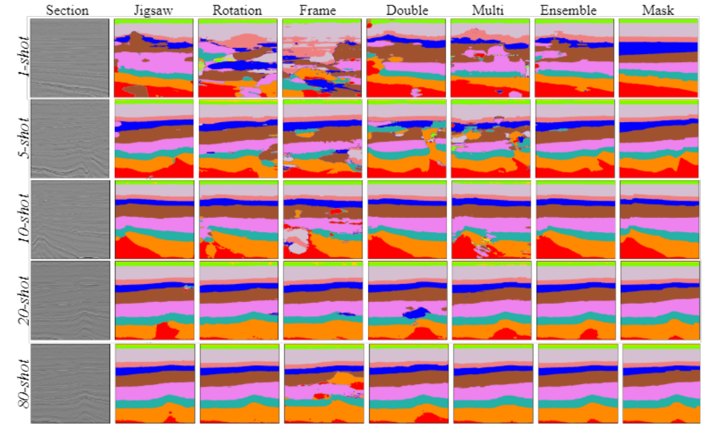
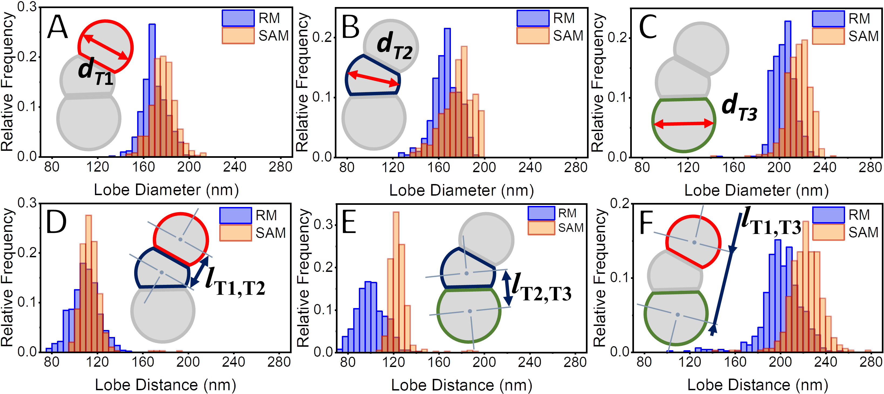
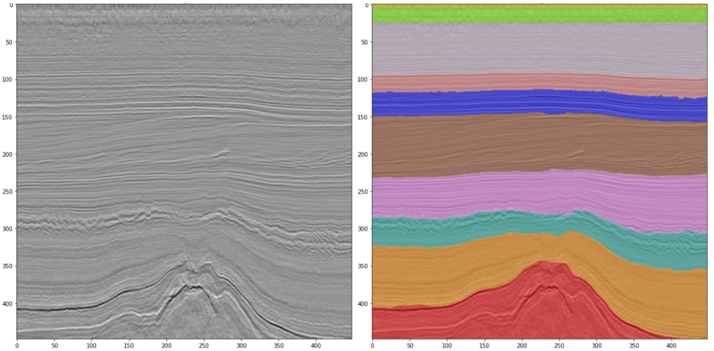
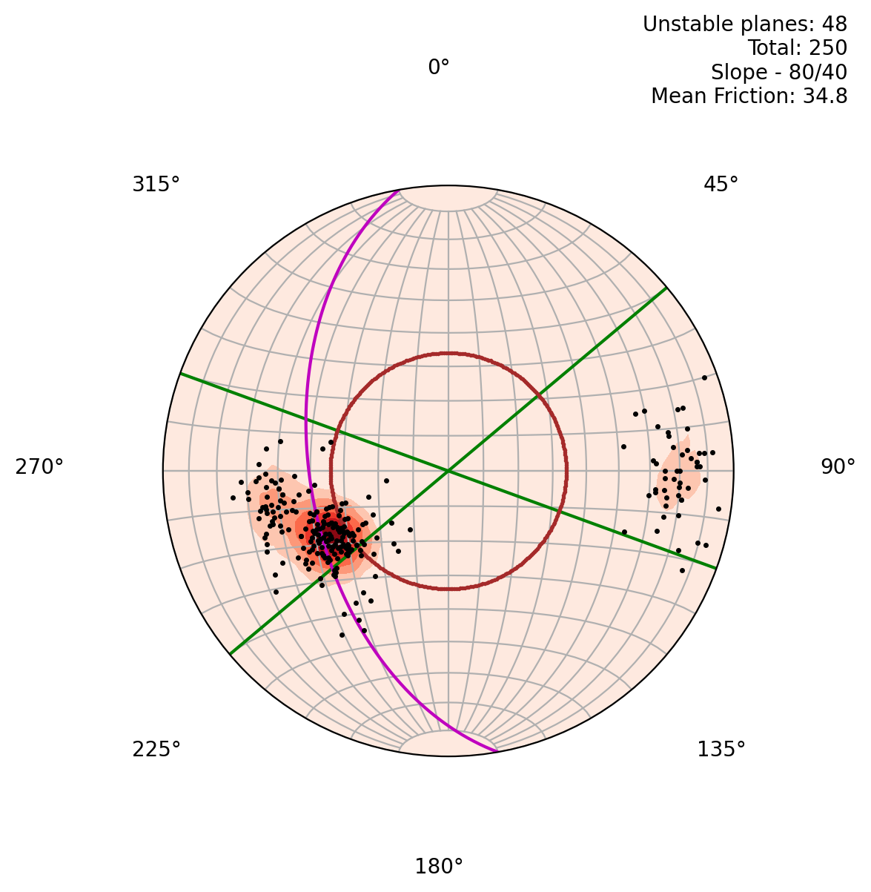

Although many seismic volumes are available for download through public databases,
these data do not have an associated interpretation. Therefore,
there is an increasing interest in addressing segmentation problems with limited labeled data,
particularly in few-shot scenarios.
To demonstrate the potential of such an approach, we conducted experiments with three simple self-supervised pretext tasks:
rotation prediction, jigsaw puzzling, and a frame-order prediction.
These tasks require the model to learn meaningful semantic features about the data that can be used as a starting point for fine-tuning in a semantic segmentation task.
Additionally, we applied ensemble techniques to enhance the performance of the fine-tuned models further, achieving even better results for the segmentation task.


This research enhances the efficiency and accuracy of morphological characterization of nanoparticles
(spheres, dumbbells, trimers) by employing a pre-trained deep learning model (SAM) for automated image segmentation leveraged by
post-processing and optimization steps that refine the segmentation results, enabling accurate particle identification.
Literature review on deep learning for the segmentation of seismic images. Also, a related list of deep learning material on Seismic Images.

Disclosing Convolutional Neural Networks. Deep learning models often act like mysterious oracles, spitting out accurate results without revealing their inner workings.
But convolutional neural networks (CNNs) are quite simple!
Advanced Regresison Techniques from Kaggle. Focused both on the application of Machine Learning Models for regression and in the use of data cleaning techniques, feature analysis, and model selection.
Simple Machine Learning Models for Classification of Exoplanets. This exercise is focused on the implementation and evaluation of simple models.

Building a dashboard to analyse geological ruptures using kinematic analyses with Python.